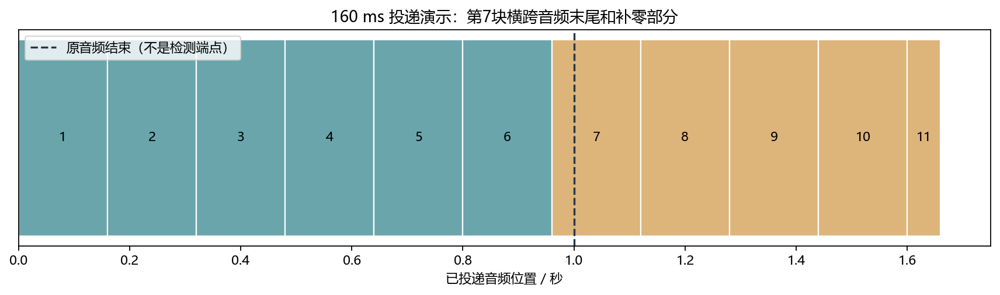
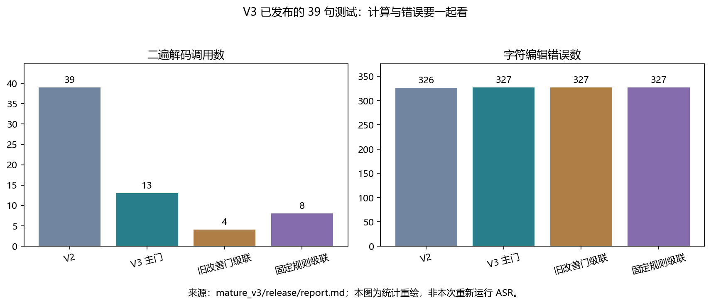
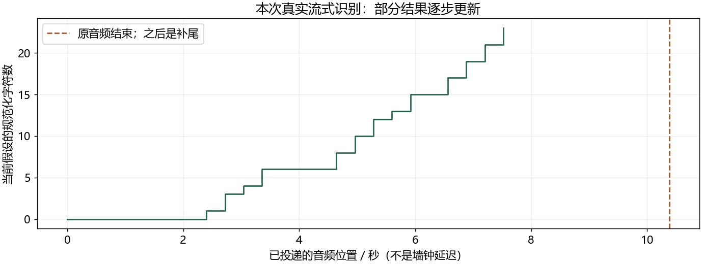

看图理解 · 跟着推演 · 对照真实结果
项目精读 · Zipformer：少跑二遍，怎样证明没乱改
先建立直觉，再逐节讲原理、代码与结果；章节目录可定位学习。以真实项目的 V3 报告为例，讲清流式投递、变化门、接受器与质量成本取舍。
从直觉、原理，到代码与结果
本版保留导览小实验，增加教材逐节精讲、代码分段阅读和结果解释。三个项目另有本次真实模型短推理，第 12 课增加实际训练曲线。按右侧小节分次学习即可，不必一次看完。
完整文字、规范公式和注释代码仍在上方“读完整图文”。视频中的历史报告、教学算例与本次实测分别标明，短演示不冒充完整重训或设备验收。
先修：第13课 ASR、第16课流式缓存；了解线性分类与 sigmoid 更好。
- 区分冻结声学模型与自己训练的小模块
- 解释输入块长与模型内部块长的不同
- 同时阅读字错误数和二遍调用成本
自己复跑：完整中文注释脚本
下载三个项目的短推理脚本 project_demo.py。它调用原项目实现，不是重新实现整个模型；有中文注释，检查输入、模型身份和输出，不下载资源或启动训练。
- 先按你对应项目的 README 准备项目环境、固定权重和公开示例；使用那个环境的 Python。缺少依赖时先核对解释器，别混用多个环境。
- 把脚本保存到电脑，打开终端进入脚本所在目录。将下面两个路径换成你的真实路径，输出目录必须不存在。
- 运行后看 report.json。增强与分离还会保存 WAV；分离的浮点分析音频试听前应检查峰值，必要时使用共同安全增益。
python project_demo.py zipformer --project "D:/我的项目/streaming-asr-zipformer" --output "D:/学习输出/zipformer-01"本脚本已在本次审查副本中分别复跑三个项目。分数应按相同模型、输入和统计口径比较，耗时会随机器和负载变化。失败时保留日志，修复后换一个新输出目录；不要删除模型校验来绕过错误。
本课覆盖清单与证据范围
- A 先分清：这个项目到底做了哪几件事
- B 从一个 WAV 追到字幕：数据和形状
- C 流式状态为什么不能每块重建
- D 热词、标签和两级决策：为什么要分三轮
- E 真正训练的小模型：把形状和损失看明白
- F 用真实结果学习：别把微小改善包装成确定成功
- G 七次 90 分钟练习：每天交付一件可检查的东西
- H 自测、答案与面试表述
结果从哪里来
- 导览中的小算例实际执行
- 原教材逐节讲解；正文代码/公式/图保留
- 新增真实运行与记录：depth-assets
本课含教材逐节精讲和本次真实短推理；GTCRN使用项目E4，分离使用官方预训练，识别使用冻结Zipformer。历史微调/三种子报告未全量重训；不声称声卡或芯片验收。
新版视频时间轴已改变，单独记录续播位置；学习计划的完成勾选保持不变。
跟着运行：注释代码、实际输出与结果图
下面代码在生成本站时实际执行。这里只是教学小实验，不是完整模型训练或业务设备测评。
import numpy as np
# 固定仓库报告数字重绘，不重新运行识别模型
method = np.arange(1, 5)
calls = np.array([39, 13, 4, 8])
errors = np.array([326, 327, 327, 327])
reference_chars = 1683
cer = errors / reference_chars * 100
# 两条线分别相对同批 V2=1，便于同轴观察
call_ratio = calls / calls[0]
error_ratio = errors / errors[0]
for i in range(4):
print(i+1, "二遍", calls[i], "错字", errors[i])
print("主门 CER", round(cer[1], 3), "%")
print("主门多错", int(errors[1]-errors[0]), "字")
本次实际输出
1 二遍 39 错字 326 2 二遍 13 错字 327 3 二遍 4 错字 327 4 二遍 8 错字 327 主门 CER 19.43 % 主门多错 1 字

精讲中的代码、运行步骤与大图
代码片段用于逐行理解；真实运行结果仅限明确标注“本次实际”的部分。教材历史图保留原有实验范围。
代码精读 03 · 第1–16行
源码精读 / 教学片段，需配套环境与上下文，不等同于独立脚本。
# 每条录音只创建一个流，不要放到 for 循环内部。
stream = recognizer.create_stream()
decoded = False
for offset in range(0, len(feed), chunk):
# 送入一块波形，末尾不够一整块也保留。
stream.accept_waveform(rate, feed[offset:offset + chunk])
# 输入一次后，可能需要执行零次、一次或多次内部解码。
while recognizer.is_ready(stream):
recognizer.decode_stream(stream)
decoded = True
# 该运行时在尚未完成首个编码块时不应读取 beam 结果。
partial = recognizer.get_result(stream) if decoded else ""
# 告知输入结束，再消费仍然可处理的尾部。
stream.input_finished()
while recognizer.is_ready(stream):
recognizer.decode_stream(stream)结果读图 03 · C 流式状态为什么不能每块重建
原教材运行记录

原教材已存图 不是本次新测 先确认实验范围 再解释坐标与单位
代码精读 05 · 第1–13行
源码精读 / 教学片段，需配套环境与上下文，不等同于独立脚本。
import torch
# inputs: [400, 12]；targets: [400]。
network = torch.nn.Linear(12, 1)
optimizer = torch.optim.Adam(network.parameters(), lr=0.03, weight_decay=0)
# [400, 1] -> [400]，保证每行一个标签对应一个 logit。
logits = network(inputs).squeeze(1)
criterion = torch.nn.BCEWithLogitsLoss(pos_weight=torch.tensor([3.0]))
bce = criterion(logits, targets)
# 只惩罚 weight，不惩罚 bias。
loss = bce + 0.05 * network.weight.square().sum()
optimizer.zero_grad(set_to_none=True) # 清除上一轮梯度
loss.backward() # 计算梯度，不更新参数
optimizer.step() # 根据梯度更新参数结果读图 06 · F 用真实结果学习：别把微小改善包装成确
原教材运行记录

原教材已存图 不是本次新测 先确认实验范围 再解释坐标与单位
这次读取了实际ONNX元数据
本次读取实际模型
encoder input x: [N, 39, 80] model_type: zipformer / version 1 decode_chunk_len: 32 encoder_dims: 160,160,160,160,160 num_encoder_layers: 2,3,2,2,3 left_context_len: 64,32,16,8,32 缓存同时包含 key / value / convolution 状态
逐行进入真实流式解码循环
源码精读 / 教学片段，需配套环境与上下文，不等同于独立脚本。
# 项目环境已准备 recognizer 与波形 feed
stream = recognizer.create_stream()
for offset in range(0, len(feed), chunk):
stream.accept_waveform(rate, feed[offset:offset+chunk])
while recognizer.is_ready(stream):
recognizer.decode_stream(stream)
stream.input_finished() # 文件结束，不是端点检测
while recognizer.is_ready(stream):
recognizer.decode_stream(stream)本次真实识别：输入与最终文字
本次实际推理输出
输入：FLEURS固定示例，10.38秒 首个非空partial：已投递2.40秒时 最终文字： 这并不是告别这是一个篇章的结束也是新篇章的开始 tokens / scores / timestamps 长度均为23 计算耗时约0.26秒；不含模型加载和读盘
字幕是怎样逐步长出来的
本次实际运行

真实partial事件 输入 10.38秒 首个位置 2.40秒 最终 23 tokens 非声卡延迟测量
闭卷自测：主变化门二遍从39次降到13次，是否能宣称总计算时间减少三分之二且质量不变？
不能。调用次数不等于总耗时，首遍与单句长度仍有成本；同批错误从326增至327，也未证明统计非劣。
逐字讲稿 · 可定位回看
第一次听录音有一个词拿不准，你可以带着候选词再听一次。但重听要花时间，而且提示错词也可能把原本正确的答案带偏。
用明确的假设算账：10 条录音，每条首遍用 100 毫秒，二遍也用 100 毫秒。全部跑两遍共需 2000 毫秒。 若变化门只让 3 条进入二遍，且暂时忽略门的耗时，则总计是 1000 加 300，等于 1300 毫秒。二遍次数少了 70%，总耗时却只少了 35%。
跑过二遍也不应直接采用新文本，还要检查是否值得接受。这些数字只是教学假设；项目实际效果以页面里的实验记录为准。 少跑 70% 的第二遍，不等于整个系统加速 70%。首遍、门、候选检索和固定开销都要纳入计时。
你的项目复用预训练中文 Zipformer 做声学识别，后面增加热词相关的小决策模块。这样描述很重要，因为运行预训练模型和重新训练声学模型是两种不同工作。
第一版先筛哪些热词值得尝试；第二版先跑二遍，再决定采用不采用完整结果；第三版在二遍之前加变化门，提前判断这次额外计算是否值得尝试。
前半部分先用小算例建立直觉，后面的精讲逐节展开，并加入本次真实模型运行。历史训练报告与本次短推理分开标注；不把官方架构和未亲自掌握的内容写成个人原创。
一秒十六千赫兹音频有一万六千点。每次投递一百六十毫秒，就是两千五百六十点，最后不足一块也要送入，不能因为不够整齐就扔掉尾音。
每条录音创建一次 stream，然后所有块继续送给它。这个对象保存跨块状态和搜索历史，若每块都新建，就把连续讲话拆成彼此失忆的小录音。
把投递从一百六十改成四十毫秒，只改变 Python 送入接口的粒度，不证明导出模型内部块长或未来上下文也改变。那些需要看实际模型元数据和导出配置。
项目在末尾补零点六六秒，让模型把尾部处理完。原音频时长和补零长度要分清，计算 RTF 时分母用原音频时长，不能靠添加静音把比例压低。
代码以最快速度投递文件，并没有等待真实声卡节奏，端点检测也关闭了。首次字幕对应投递到哪个音频位置，不等于用户墙钟时间等了多久。
如果第一条字幕在补尾才出现，要明确记录。真正端到端延迟还需要采集、队列、端点、显示或播放的时间戳，这些没有实测时就保留未知。
首遍把德国识别成得过，候选检索提出德国，再带着偏置重新识别，有可能改对。这里二遍是重新处理录音，不是简单把字符串得过强制换成德国。
报告也有公元被公园误导的机制。一个候选看起来领域相关，不等于它出现在声音里；如果偏置太强，模型可能把正确普通词硬拉成热词。
因此评价不能只看候选词有没有出现，而要看整句编辑错误是否减少，还要保留不该触发热词的负例。候选不在固定词表或没被检索出来，后面的门也无法凭空补救。
第三版的训练标签只问规范化后的首遍与二遍文字是否不同。改对一个字是变化，改错一个字也是变化，所以这个目标与错误数减少不是同一个标签。
变化门只读首遍可获得的信息，决定要不要支付二遍计算成本。真的跑完二遍且文字改变后，再由第二版接受器判断是否采用，否则退回首遍。
推理时没有人工参考，特征不能偷偷读正确答案或真实错误数。训练可以用已准备的结果构造标签，但线上决策只能使用当时可获得的信息，这是数据边界。
第三版变化门输入十二个特征，用十二个权重加一个偏置得到一个数，再经过 sigmoid。总共十三个可训练参数，不是上千万声学参数都重新学了一遍。
特征标准化的均值和标准差只从训练部分计算，开发和测试沿用。若在测试上重新拟合，或者同一句的候选跨训练验证，就可能把答案相关信息泄漏给选择过程。
分数高表示按这个训练目标更倾向变化，不是校准后的识别正确概率。大模型名气并不能替代这一点：小门的目标、特征、阈值来源一样要能解释。
代码中的四个方法顺序是第二版全跑二遍、第三版主变化门、旧改善门和规则门。二遍次数依次三十九、十三、四、八，错误数是三百二十六和三个三百二十七。
参考总字数一千六百八十三，用错误数除它得到各自 CER。为把调用和错误画在同一纵轴上，我们分别除以第二版值，让第二版两条曲线都从一开始。
这个归一化只是可视化，不改变实际整数。打印里保留每组调用和错误，因此看图时可以随时回到原数；这些输入来自固定报告，不是脚本调用模型生成的新预测。
主门的二遍调用比值是十三除三十九，约三分之一，明显下降；错误比值略高于一，因为从三百二十六变成三百二十七，只多了一个字。
但旧改善门和规则门同样三百二十七错，二遍却分别只有四次和八次。主门在这批数据上没有胜过这些更简单对照，不能只与最贵方案比就宣布最好。
调用次数减少约三分之二，也不等于总运行时间减少三分之二。首遍始终有成本，不同句子二遍也不等长，整体速度要按实际或明确估算的计时口径计算。
读代码时找到执行二遍的位置，它必须被尝试条件包在里面。若所有句子都先跑完二遍，然后只丢弃一部分结果，质量策略可能生效，计算节省却没有发生。
接受器拒绝的二遍已经花过计算，不能从成本表里删掉。项目报告的百分之三十一点四五节省，是复用单次解码计时的离线估计，不是本次麦克风实测。
不同版本测试句子不同，不能把三轮 CER 横排当升级排行榜。第三版只有三十九句，多一字或少一字的现象不能支持稳定优越或非劣保证，需要更多独立证据。
自测：变化门分数高，是否说明二遍一定更准？不是，它只预测文字可能改变。二遍被拒绝要不要计费？要，因为计算已发生。输入块变短是否改了模型未来上下文？也不能这样推断。
你的口述可以说，复用冻结流式识别基线，训练轻量候选决策并建立质量成本评测。固定这批报告中，调用减少但多一个字错误，且简单规则仍有竞争力。
真正写成个人能力，还需在有权限的本地项目运行验证、改一项小实验、保存新结果。理解报告是开始，不等于已经复现声学训练、真实端点或硬件性能。
仓库当前版本已经有三轮算法实验。最初的 10 条录音对照，只是基础工程实验。后面的热词筛选器、结果接受器和变化门，才是新增的可训练模块。
层次：声学基线。已实现什么：上游中文 Zipformer v1，标称 14M 参数，ONNX CPU 推理。你应该怎样描述：复用预训练模型；没有重新训练或微调声学权重。
层次：基础实验。已实现什么：FP32 / 混合 INT8、贪心 / 束搜索、40 / 160 / 640 ms 输入分块。你应该怎样描述：比较表示、搜索和输入方式；不是修改模型内部块长。
层次：V1。已实现什么：首遍检索候选，训练 11 维筛选器，决定加哪些热词。你应该怎样描述：先判断“候选是否值得尝试”。
层次：V2。已实现什么：单候选二遍，再用 17 维线性接受器选择完整结果。你应该怎样描述：已经看过二遍输出，再判断“要不要采用”。
层次：V3。已实现什么：用 12 维变化门提前决定要不要跑二遍，再复用 V2 接受器。你应该怎样描述：先节省计算，再检查变化是否值得接受。
这里的“二遍”是重新处理同一录音，不是在首遍文字里直接替换一个词。它等文件结束才启动，所以整条系统不能被描述为“所有纠错都在即时流式完成”。
建议在总时间表安排的 Zipformer 精读周，用 7 次、每次约 90 分钟读本页。第一天只到 C 节。
读不懂声学特征时回看第06章；读不懂张量时回看第04章；读不懂 CTC 与 RNN-T 时回看第13章。
源码入口是 run_experiment.py 的 load_audio()、make_recognizer()、decode()。成熟版对应 mature/decoder.py 的 Decoder.decode()。先不读神经网络内部，先把接口读懂。
对象：sf.read(..., always_2d=True)。实际形状或结构：[样点数, 声道数]。解释：项目只接受一个声道；立体声直接报错。
对象：samples[:, 0]。实际形状或结构：[样点数]，float32。解释：单声道一维连续数组，不是 [帧数, 特征数]。
对象：feed[offset:end]。实际形状或结构：[当前块样点数]。解释：16 kHz、160 ms 时通常是 2560 点，末块可更短。
对象：内部声学特征。实际形状或结构：每帧 80 维；帧数依赖前端。解释：配置明确 feature_dim=80；此 Python 包装没有直接暴露特征张量。
对象：tokens / log_probs / timestamps。实际形状或结构：三个等长列表，长度为输出 token 数。解释：对齐检查在 Decoder.decode() 末尾；一个 token 不必等于一个汉字。
对象：V3 单候选特征。实际形状或结构：[12]。解释：十一个首遍候选特征，加一个 token 对齐有效标记。
对象：V3 训练输入。实际形状或结构：[400, 12]。解释：400 个 rank0 候选，40 个变化、360 个未变化。
对象：V2 训练输入。实际形状或结构：[90, 17]。解释：90 个已变化候选，来自 82 个句子，不是 90 个独立句子。
一秒 16 kHz 音频有 16000 点。按 160 ms 投递，每块 2560 点。
原音频最后一块不足 2560 点也应送入。仓库额外补 0.66 秒零样点，让模型处理尾部；补尾不应加入 RTF 的原音频时长分母。
编码器提取声学信息，预测网络利用已输出 token 历史，Joiner 合并两路表示后参与 Transducer 搜索。Zipformer 是编码器架构，RNN-T 是序列建模框架，二者不是同一个概念。
把 stream 想成一个持续工作的记事本：已经接收的特征、模型跨块状态、解码搜索状态都跟这段语音关联。每条独立录音创建一次 stream；同一录音的后续块继续送给它。识别器可复用，但不要把不同录音当成一个未清理的连续流。
下面是按真实 decode() 调用顺序写的教学化简代码。它不是独立可运行程序：recognizer、rate、feed、chunk 要由项目准备。为便于理解加入了中文注释，省略了结果事件和输入检查。
accept_waveform 是投递，is_ready 是询问是否已有足够输入，decode_stream 才实际推进解码。投递 40 ms 不等于每 40 ms 必须生成新字。get_result 读到的是当前假设，前面的字也可能被后续上下文改写。
名词：输入块长。本项目含义：每次交给接口的波形时长。常见误解：误认为等于模型内部编码块长。
名词：首个 partial 的音频位置。本项目含义：首次非空字幕时已投递多少秒音频。常见误解：误认为真实用户等待的墙钟时间。
名词：RTF。本项目含义：原音频一秒需要多少计算秒。常见误解：误认为就是首字延迟或句末延迟。
名词：端点 endpoint。本项目含义：判断一句话是否结束的机制。常见误解：误认为读完文件已经验证麦克风端点。
本项目设置 enable_endpoint_detection=False，以文件末尾作为句末。代码以最快速度投递，没有按真实采集节奏等待。首个字幕可能在 0.66 秒补尾中出现，项目用 first_partial_in_padding 标记。
真实端到端测试还需要采集时间戳、队列、端点决策和界面显示时间戳。
图只展示波形切块的位置，未执行识别模型。黑色竖线位于第 7 块内部，标出原音频结束位置，不是由 VAD 检测出的端点。
绘图与断言来自已运行的中文注释脚本，数值保存在教学运行结果。
把原音频改成两秒后再算一次，需要改的是输入长度，不是凭空增大模型缓存。
先看中文注释：每条录音只创建一个流，不要放到 for 循环内部。；送入一块波形，末尾不够一整块也保留。。这几行仍属于C 流式状态为什么不能每块重建的同一处理链，输入变量沿用前一段，不是一个独立程序。
先看中文注释：输入一次后，可能需要执行零次、一次或多次内部解码。；该运行时在尚未完成首个编码块时不应读取 beam 结果。。这几行仍属于C 流式状态为什么不能每块重建的同一处理链，输入变量沿用前一段，不是一个独立程序。
先看中文注释：告知输入结束，再消费仍然可处理的尾部。。这几行仍属于C 流式状态为什么不能每块重建的同一处理链，输入变量沿用前一段，不是一个独立程序。
先看这张随教材保存的图。本页脚本实际运行的投递示意：一秒合成输入加补尾，不是 ASR 模型延迟实测。本次视频引用既有结果，不把它称为新运行。
横轴、纵轴、图例和单位决定图在回答什么问题。若曲线重合，先问它验证的是数值等价、形状还是算法质量。图像相似不自动证明真实业务效果相同。
把图中观察与本节假设联系起来，再回到前面的代码确认数组来源。合成信号实验、历史报告和真实模型输出属于不同证据范围，不能混成同一个成绩。
热词偏置是在解码搜索中奖励相应 token 前缀，不是“保证输出这个词”。本项目成熟版采用 modified beam search，最多保留 4 条活跃路径；Encoder / Joiner 用 INT8，Decoder 仍用 FP32。不要写成整模型全 INT8。
V1 的词表来自 1500 个训练句子的文本，固定 512 词。只有其中 400 条录音用于构造门控标签。拼音检索从首遍输出找近似发音窗口，最多提 4 个候选。正确词若不在词表，或根本没进候选列表，后面的分类器就无法补救。
假设首遍把“德国”识别成“得过”。这是报告里实际出现的改善例。候选检索提出“德国”后，带热词重新识别可能纠正它；但“公元”也可能被“公园”误导。这也是报告里的真实误伤机制。
V1 用人工参考只构造训练标签。记首遍整句编辑错误数为 E下标0，单热词二遍错误数为 E下标1：
读法：只有整句错误严格减少，标签才是 1。候选词出现在参考里，不保证整句结果变好。推理时没有人工参考，所以特征不能偷看 E下标0、E下标1 或标签。
V2 把决策移到二遍之后。它比较首遍与二遍：改了多少字、是否新增候选词、改动是否跑到候选窗口外、token 分数怎样变化。mature_v2/acceptor.py::proposal_features() 输出 17 维特征。
只用实际变化的 90 个候选训练，未变化的 1505 个候选由确定规则直接回退。
V3 则在花钱之前再设一关。mature_v3/gate.py::training_rows() 每条录音只取原检索顺序的 rank0 候选。标签只问规范化文字有没有变化：
这里的 h下标0 和 h下标1 是首遍与二遍假设。变化不等于改善。 预测可能变化只是决定是否值得支付二遍成本，真正接受结果仍由冻结 V2 接受器负责。 去读 mature_v3/policy.py::execute() 时，先找 if attempt:。昂贵的 decode_second(...) 必须在它里面，才能真的节省计算。先跑完二遍再丢弃，不叫提前跳过。已跑过但被拒绝的二遍，也必须计入成本。
V3 并不训练数千万参数的声学模型。它训练 12 个线性权重和 1 个偏置，一共 13 个参数。训练只在 CPU 上完成。标准化均值和标准差仅用训练部分计算，验证和测试不能重新拟合。
x下标j 是某个候选的第 j 个特征；mu下标j、sigma下标j 是训练统计。分母下限避免几乎不变化的特征造成除零。s 是筛选分数，不是经过校准的“识别正确率”。
V3 的真实配置是全批次、400 epoch、Adam 学习率 0.03、L2 系数 0.1。训练有 40 个变化和 360 个未变化，正类权重为 3。对应目标可写为：
这是数学表达；代码使用 BCEWithLogitsLoss，直接输入 z，避免手算 sigmoid 后再取对数的数值风险。偏置不受 L2 惩罚；Adam 的 weight_decay=0，避免重复惩罚权重。
下面是训练步骤的教学片段，不是独立数据加载脚本。inputs 与 targets 需由项目的数据准备流程提供；前者是标准化特征，后者是浮点的0/1标签。不要复制后用随机数据产生的loss充当项目结果。
V2 为什么按句子加权？一句话可能产生多个候选。如果某句生成 4 个变化候选，另一句只有 1 个，直接平均会让前一句影响变成 4 倍。fit_acceptor() 给每个候选分配“该句变化候选数的倒数”，让每句的总权重一致。
交叉验证也按 sentence_id 分组，避免同一句不同候选同时进入训练折和验证折。
token log-softmax 分数只能当特征。它会受温度、搜索偏置和 token 化影响，
不能直接念成“这个字有百分之多少概率正确”。同理，训练损失下降只说明更好拟合训练目标，不证明新录音表现更好。
先看中文注释：inputs: [400, 12]；targets: [400]。；[400, 1] -> [400]，保证每行一个标签对应一个 logit。。这几行仍属于E 真正训练的小模型：把形状和损失看明白的同一处理链，输入变量沿用前一段，不是一个独立程序。
先看中文注释：只惩罚 weight，不惩罚 bias。；清除上一轮梯度；计算梯度，不更新参数。sum沿指定维度累加。它不是平均值，样本数或维度改变时量级也可能改变。 backward沿计算图求梯度。它本身不更新权重；还要检查梯度有限并调用优化器更新。
先看中文注释：根据梯度更新参数。step使用已有梯度更新参数。训练前清梯度、反向传播、更新这三个步骤的顺序不能混淆。
下面数字来自仓库已发布报告，这段教材引用的是之前已经提交的历史报告。各轮测试句子不同，不能把三轮 CER 横着当作版本升级排行榜。
同一轮内比较：V1 主模型 vs 无热词。数据规模：200 句。已发布结果：CER 均为 19.175%。能得出的结论：没有整体净改善；全词表误报减少不等于优于无热词。
同一轮内比较：V2 主模型 vs 无热词。数据规模：新 100 句。已发布结果：19.2287% → 19.0669%，净少 6 字错误。能得出的结论：配对区间跨 0；计算成本增加 110.30%，不能宣称稳定提升。
同一轮内比较：V3 主门 vs 同批 V2。数据规模：新 39 句。已发布结果：326 → 327 字错误，二遍 39 → 13 次。能得出的结论：有节省计算的机制，但多 1 字错误；不支持非劣保证。
V3 还必须面对更简单的对照：旧改善门和固定规则门都得到 327 个错误，却分别只跑 4 次和 8 次二遍。新训练的变化门没有在这批样本上胜过这些方案。
读图时同时看两侧：少算不一定更准，更准也可能需要更多算力。颜色相同表示同一个方法。图中使用的是整数错误数，避免百分比小数掩盖“实际上只差一字”。
这张图也由上面的绘图脚本生成：names、calls、errors 三个列表必须同序；同一索引对应同一方法。柱状图从零开始，避免把一字差异画成巨大退化。
CER 要先固定归一化，再累积替换、删除、插入。metrics.py 做 NFKC、小写化、去 Unicode 标点和空白；保留数字和符号，不统一“十二”和“12”。语料 CER 不是每句 CER 的简单平均：
分母需要大于零。空参考录音的插入仍应记录，不能伪造一个参考长度。RTF 则是总计算秒数除以原音频总秒数；不同测量协议下的 RTF 不直接比较。
V3 的 31.45% 节省来自复用单次解码计时的离线成本估计，区间是按句子重采样，不是多轮硬件测速置信区间。
未验证的范围包括麦克风延迟、真实领域术语、说话人独立性，以及声学模型预训练数据是否重叠。
最后看实验顺序：训练、开发集选阈值、冻结、全部预测、最后读参考评分。测试一旦用于分析，就不能继续冒充“未看过的新测试”。这比把主结果写得漂亮更能体现算法实验能力。
先看这张随教材保存的图。本页绘图脚本实际运行结果：重绘仓库 V3 已发布的 39 句实验，不是本次重新评测。本次视频引用既有结果，不把它称为新运行。
横轴、纵轴、图例和单位决定图在回答什么问题。若曲线重合，先问它验证的是数值等价、形状还是算法质量。图像相似不自动证明真实业务效果相同。
把图中观察与本节假设联系起来，再回到前面的代码确认数组来源。合成信号实验、历史报告和真实模型输出属于不同证据范围，不能混成同一个成绩。
每天建议“复习 10 分钟＋读图与代码 25 分钟＋动手 40 分钟＋总结 15 分钟”。遇到环境问题超过 15 分钟，记录报错并改做手算或代码追踪，不让安装占掉整天。
次数：1。重点与站内入口：本页 A—C；采样与数字音频。当日交付：手绘 WAV 到字幕的 6 步流程。通过标准：能说出样点、帧、token 的区别。
次数：2。重点与站内入口：decode()；NumPy。当日交付：计算 40 / 160 / 640 ms 对应点数。通过标准：16 kHz 时为 640 / 2560 / 10240 点。
次数：3。重点与站内入口：本页 F；ASR 评测。当日交付：手算两句的总 CER。通过标准：不简单平均句子 CER，能处理插入。
次数：4。重点与站内入口：本页 D。当日交付：一张 V1 / V2 / V3 对比表。通过标准：分清改善标签、变化标签和接受决策。
次数：5。重点与站内入口：本页 E；PyTorch 基础。当日交付：标注 12→1 线性模型每步 shape。通过标准：能解释 13 参数、梯度与参数更新。
次数：6。重点与站内入口：本页 F；工程与评测。当日交付：写 200 字结果分析。通过标准：同时写收益、代价、简单对照与限制。
次数：7。重点与站内入口：本页 H；项目交付。当日交付：录制 2 分钟口述或写逐字稿。通过标准：不声称声学训练、端点实测或稳定提升。
项目已克隆且依赖齐备时，可在项目目录执行下面只读检查。不要在网站目录运行，也不要为了通过检查删除冻结文件。 第一次只读网页也能完成前六次的理解任务。真正想把项目写进简历，仍需要亲手运行、修改一个小实验、保存结果，并能解释代码。本页不承诺“只看过教程就等于掌握项目”。
问题：每输入一块音频重新 create_stream() 会怎样？。参考答案：把连续语音当成彼此独立输入，丢掉跨块上下文与搜索状态；应每条录音创建一次。
问题：输入块从 160 ms 改成 40 ms，模型 lookahead 是否也变了？。参考答案：没有；只改 Python 投递粒度，未改导出模型配置。
问题：V3 分数高，是否表示二遍一定更准确？。参考答案：不是；训练目标只是文字是否变化，仍需 V2 接受器与整体评测。
问题：二遍被接受器拒绝，成本可以不算吗？。参考答案：不可以；计算已经发生，必须计费。
问题：一句 100 字错 10 字，另一句 10 字错 5 字，总 CER？。参考答案：（15）除以（110）约等于13.64 ，不是 30%。
问题：12 维 Logistic 有几个参数？。参考答案：12 个权重加 1 个偏置，共 13 个。
问题：为什么新门不应宣称最优？。参考答案：V3 同批测试中，简单门同为 327 错而二遍更少；样本也仅 39 句。
问题：候选词不在训练词表里，接受器能补救吗？。参考答案：无法沿这条候选流程补救；应先分析词表覆盖和检索召回。
可诚实采用的项目介绍：“我基于冻结的 Zipformer 流式模型，研究热词二遍解码的决策。先做候选筛选，再学习结果接受，最后用首遍变化门节省计算。我实现了候选特征、轻量训练、分组验证和冻结评测。
在 39 句探索测试中，主门减少二遍调用，但比 V2 多一个字错误，且没有胜过简单门，因此保留基线和全部对照。”
其中“我实现了”只适用于你能独立解释、复现并确认自己贡献的部分。如果代码主要由工具协助生成，
应说清自己负责的设计、修改、测试与分析，不把上游模型或尚未理解的模块算作独立研发。
Zipformer是编码器架构，负责从声学特征中提取表示。Transducer还包含利用已输出标签历史的预测网络，以及合并两路表示的Joiner。不能把整个识别系统都等同于一个编码器名字。
搜索过程决定何时输出标签、何时沿时间推进。项目使用混合量化模型和modified beam search，缓存跨块声学状态和搜索状态。输入一百六十毫秒是外部投递粒度，不是模型内部结构说明。
用户新增的部分在其后：检索候选、判断要不要跑二遍、判断要不要接受改变。训练的是小决策模块，声学基线被冻结。完整理解需要把这三层各自的数据和代价分开。
原教材没有加载ONNX，只能保留内部维度未知。这次已读取项目固定模型的真实输入签名：编码器输入是批次、三十九个特征位置、八十维。这里的三十九不是三十九毫秒，也不是输出字数。
元数据记录decode chunk长度三十二，五组编码维度都是一百六十，层数分别二、三、二、二、三。可以用这些事实讨论本模型，不能借此推断所有Zipformer版本都一样。
输入还包含多组key、value、卷积等缓存。它们说明跨块上下文确实通过接口传递。未来上下文和精确延迟还需要对应导出配置与前端步长解释，不能只看到一个数字就直接乘成最终端到端延迟。
创建流放在循环外面，同一段录音始终使用同一个流。投递一块波形并不意味着立刻有足够特征可计算，所以下一步要检查is_ready。
ready循环可能执行零次、一次或多次，直到消耗当前可处理内容。结果接口还要遵守运行时约定：本项目在首个编码块完成前不读取beam结果，避免原生接口异常。
结束时通知input_finished并继续消耗尾部。本次仍按项目规则补零点六六秒，端点检测关闭。它证明文件模拟流式路径运行，不证明真实麦克风句末等待已经测试。
这次真的加载了固定ONNX模型，识别仓库附带的一条中文录音，最终输出如画面所示。旁白没有把预先写好的文字冒充模型输出，原始partial事件和token列表都保存在本次记录里。
参考有引号、逗号和句号，识别输出没有标点。按项目去标点空白的规范化规则，这一条文字与参考一致；这只能说明这一条样例，不是整个模型准确率百分之百。
首个partial出现时已投递二点四秒音频，但程序以最快速度喂文件，实际计算时间远小于二点四秒。这是音频位置，不是用户等待墙钟时间，两个量必须分开说。
横轴是已经投递的音频位置，纵轴是当前规范化文字长度。阶梯不是固定每块都加一个字：有些块没有新文字，有些块一次增长多个字。
图只画长度，原始记录还保留每次文字，因为部分假设可能改写而不改变字数。调试字幕回放时应对照实际字符串，不能仅凭长度判断内容一直正确。
竖线标原音频结束。尾部补零为了完成模型处理，但不应加进RTF分母来制造更低比例。真正实时应用还需要采集、队列、端点和显示时间戳。
读policy.execute时先找if attempt。昂贵的decode_second调用必须在这个条件里面，不然只是事后丢弃结果，根本没有提前节省计算。用假的计数解码器可以单元测试零次和一次调用路径。
接受器拒绝一份二遍结果，计算已经发生，仍要计费。还要分别记录首遍、检索、门控、二遍与接受器时间，不把两个版本不同范围的计时数字直接比较。
训练标签可以从人工参考计算，推理特征不能偷看参考错误数。候选共享句子时要按句子分组，标准化只拟合训练数据，阈值在开发集选择，最后再冻结测试。
适用边界与参考正文
本课含教材逐节精讲和本次真实短推理；GTCRN使用项目E4，分离使用官方预训练，识别使用冻结Zipformer。历史微调/三种子报告未全量重训；不声称声卡或芯片验收。
教学图与实验图由本站整理生成；项目代码、预训练模型和公开数据的来源见配套正文。旁白是本地中文语音合成，不是教师真人录音，也不是 NotebookLM 生成。没有向 Google 上传项目材料。